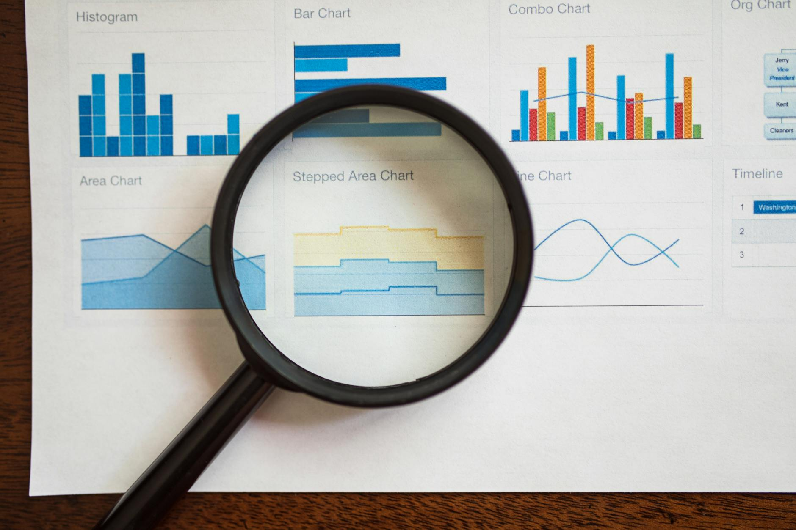

TL;DR
Beginner investors should start with diversified ETFs, like VTI. Use a 30-day screening process to assess risk and allocate effectively. Avoid lack of diversification and neglecting reviews to optimize your investments.
Quick Answer: Start with a Balanced ETF
For beginners, a balanced ETF like the Vanguard Total Stock Market ETF (VTI) can be an excellent starting point. Investing $1,000 in VTI exposes you to a broad range of U.S.
companies, helping minimize risk. Avoid overly complex investments. The main decision is clear: stick to a straightforward ETF rather than individual stocks, which require more research and exposure to specific risks.
Why Most Beginners Pick the Wrong AI Stocks

### Why Most Beginners Pick the Wrong AI Stocks
Many new investors mistakenly believe that selecting hot AI stocks will lead to quick profits. For example, when NVIDIA's stock price surged from around $200 in late 2021 to over $300 in early 2022, many enthusiastic investors jumped in, assuming the upward trajectory would continue indefinitely.
However, within just a few months, the price tumbled back to about $180, leaving those who bought at the peak nursing significant losses—over 40% in just a few months.
The allure of trendy AI stocks like Alphabet and Amazon’s AI initiatives can overshadow sound investment principles. While these companies are indeed pioneers in AI technology, their stock prices can experience high volatility due to market sentiment.
For instance, in 2021, Alphabet’s stock jumped by nearly 65% during the AI hype, only to see a correction of about 20% in early 2022, causing panic among new investors who didn’t account for the inherent risks.
The crucial mistake many beginners make is ignoring fundamental analysis in favor of mere market trends. It’s easy to get swept up in the latest headlines proclaiming the next big AI revolution, but without a grasp on company earnings, P/E ratios, and market positioning, investors can quickly find themselves overexposed to volatile stocks.
A 30-Day Screening Process
To establish a varied yet simple portfolio, spend 30 days implementing the following screening process: 1. Week 1: Research ETFs Look for diversified ETFs that track major market indexes, such as VTI or SPY. 2. Week 2: Risk Assessment Assess your risk tolerance using a quiz available on brokerage sites like Charles Schwab or Fidelity. 3. Week 3: Allocation Decision Choose your allocation percentages—perhaps 60% in stocks and 40% in bonds. Calculate how much to invest based on your budget. 4. Week 4: Purchase Execution Open your brokerage account (Robinhood or TD Ameritrade) and make your initial purchases. Monitor the performance for feedback.
A Real Scenario for Beginner Investors
### A Real Scenario for Beginner Investors
Imagine a beginner investor, let's call her Sarah, starting with just $100 per month. Instead of waiting to accumulate a substantial lump sum, she decides to initiate a simple recurring investment plan that aligns with her financial goals and risk tolerance.
For instance, Sarah allocates $60 to a broad market ETF, such as the SPDR S&P 500 ETF (SPY), which gives her exposure to a wide range of companies and diversifies her portfolio.
This decision allows her to participate in the overall growth of the market, which has historically yielded about 7-10% returns annually.
Next, Sarah puts $20 into a dividend-paying ETF like the Vanguard Dividend Appreciation ETF (VIG). These funds not only provide potential capital appreciation but also allow her to benefit from regular dividend payments, which she can reinvest to purchase more shares or use as income.
The remaining $20 is set aside in cash or allocated into a bond fund such as the iShares Core U.S. Aggregate Bond ETF (AGG), which adds a layer of stability and reduces her portfolio's overall volatility.
Initially, the impact may seem minimal, as the account will only show a balance of $1,200 after a year of consistent investing. However, this discipline fosters good financial habits.
Sarah learns to overcome the urge to time the market—a pitfall many novice investors face. As she experiences market fluctuations, whether they're dips or peaks, she's gaining valuable insights into how various investments perform under different conditions.
Consider a scenario where the market experiences a downturn during her first year, with the S&P 500 dropping by 15%. While this might dishearten other investors, Sarah remains committed to her strategy and continues her monthly investments.
Mistakes That Cost Real Money
### Mistakes That Cost Real Money
Common mistakes that beginners make can significantly impact their investment outcomes:
- Avoiding Diversification: One of the biggest pitfalls is failing to spread investments across different assets or sectors. For instance, suppose you invest $10,000 solely in a tech company like XYZ Corp.
If the tech sector faces a downturn—say, due to regulatory changes or a tech bubble burst—your entire investment could be at risk of significant losses.
A well-diversified portfolio might allocate that same $10,000 across various sectors: $3,000 in tech, $3,000 in healthcare, $2,000 in consumer goods, and $2,000 in bonds.
This way, if the tech sector declines by 25%, your total loss is only $750 instead of risking the full $10,000.
- Neglecting Portfolio Reviews: Another common error is to set and forget your portfolio. Many beginners establish their allocations but fail to revisit them regularly.
Over time, market conditions change, and your initial risk tolerance may no longer align with your current financial situation. For example, if you originally had a balanced portfolio with an 80/20 stock-to-bond ratio and then experienced a significant life change, such as becoming a parent or nearing retirement, your risk appetite likely shifts.
If you don't review your portfolio at least quarterly, by the end of a year, you could end up with a 90/10 ratio due to stock growth, increasing risk during a volatile market.
Case Scenario: Imagine you set up a $15,000 portfolio with 70% in stocks and 30% in bonds. After a year, the stock market increases, and your stocks are now worth $12,000, while your bonds have remained stable at $4,500.
If you ignore it and the market falls sharply, your stocks may drop back to $8,000
Which Tools or ETFs Make This Simpler
For easy portfolio management and research, consider these tools: - Betterment: A beginner-friendly robo-advisor that allows automated investing tailored to your goals. - Vanguard and Fidelity: Both provide low-cost ETFs and comprehensive resources for new investors. - Morningstar: Great for research on ETFs, offering detailed analysis and ratings.
Start with these platforms for your initial investments but ignore overly complex trading options for now. Investing doesn't have to be complicated.
FAQ
What are the best asset classes for a beginner's portfolio?
For beginners, a mix of U.S. stocks, bonds, and perhaps some international ETFs is ideal. Balanced allocations typically range around 60% stocks and 40% bonds to manage risk.
How often should I rebalance my investment portfolio?
Experts recommend reviewing and rebalancing your portfolio at least once a year or whenever your asset allocation drifts more than 5% from your initial targets.
This article has been reviewed for practical usefulness and is updated when information changes.
Next step
Use the article as a decision point, not just reading material. Your next system matters more than more browsing.
Search more articles
Find related tools, workflows, and guides.
Photo credits
- Photo 1: RDNE Stock project via Pexels
- Photo 2: RDNE Stock project via Pexels
- Photo 3: www.kaboompics.com via Pexels
- Photo 4: Kampus Production via Pexels
- Photo 5: cottonbro studio via Pexels